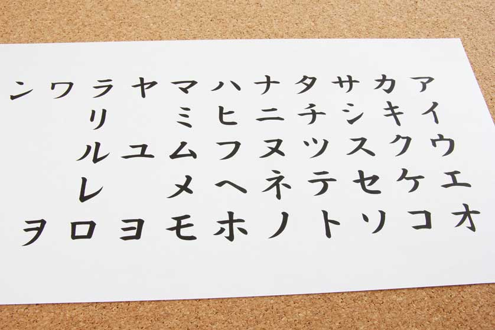

Introduction
Welcome to my site on how to speak Japanese! This is a step by step guide to help you navigate the language and learn it most efficiently.
Step1:Study Hirigana
Hirigana is one of the three writing systems in Japanese. It is very important and highly recommended to master this first step before learning the other 2 writing systems (Katakana and Kanji). All three writing systems are used in conjunction with one another but hirigana is the building block of those systems. Hirigana contains 46 characters with more than 20 extra pronunctiations when multiple characters are put together a certain way. It is important to memorize and practice reading, writing and pronouncing such.
Step2:Study Katakana
Katakana comes next in our guide to gaining complete comprehension and fluency in the Japanese language. Katakana has the same exact pronunctiations as hirigana but the character symbols are different and are used in substitution to hirigana when saying a foreign word. For example Mary in Japanese with the japanese reading would be Meari and katakana would be used instead of hirigana.
Step3:Learn grammar and vocab
Learn the vocab and grammar to fully be able to make regular conversation in Japanese. Practice such by writing down complete thoughts, ideas and sentences in hirigana and katakana. In this phase you will see your ability to write and read grow tremendously.
Step4:Consume Japanese Media
Listen to podcasts, watch movies, watch shows, read newspapers and consume media all in japanese. This will not only help your listening abilities but your ability to think and pronounce words more fluently.
Step5:Talk!
Go out there and make a friend or two that can speak the language and have fun practicing it with them. There are also a variety of resources that let you speak with indigenous people out there.